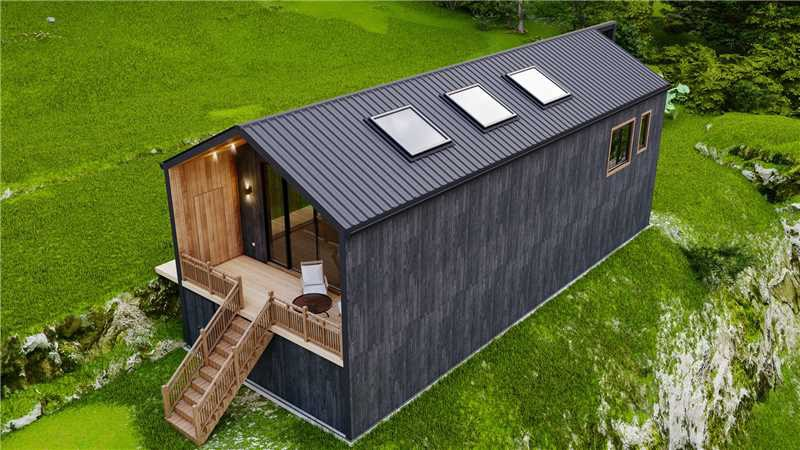
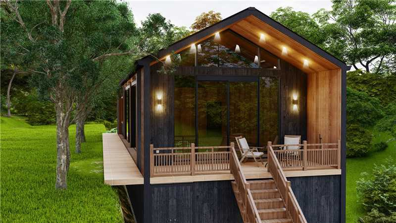
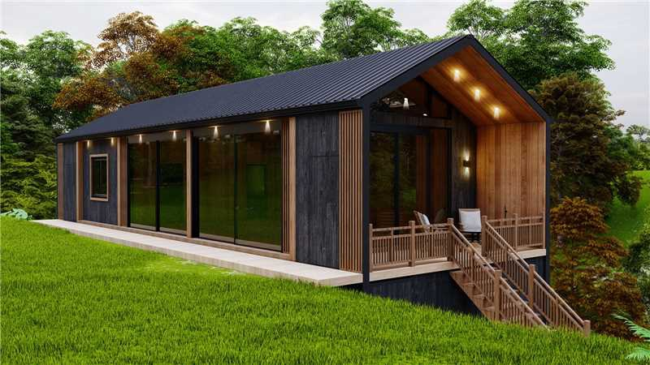
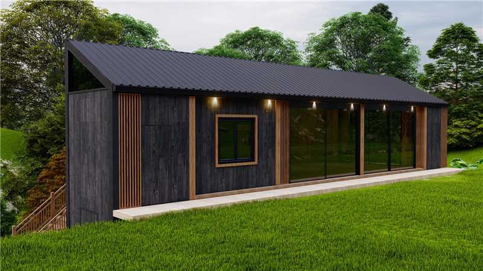
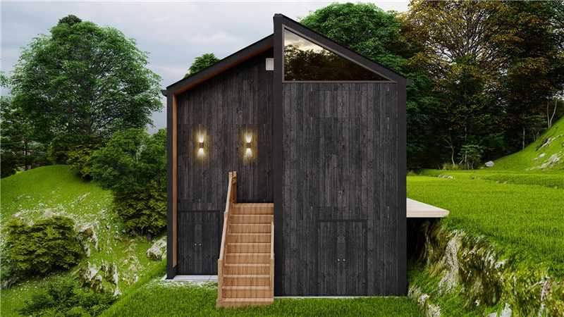
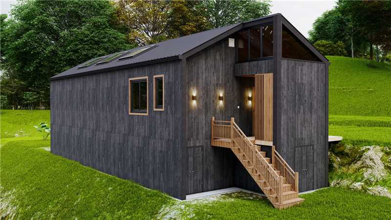
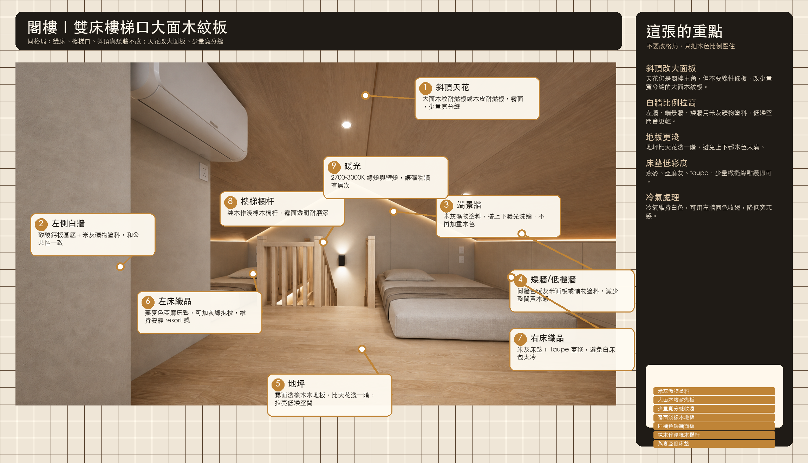
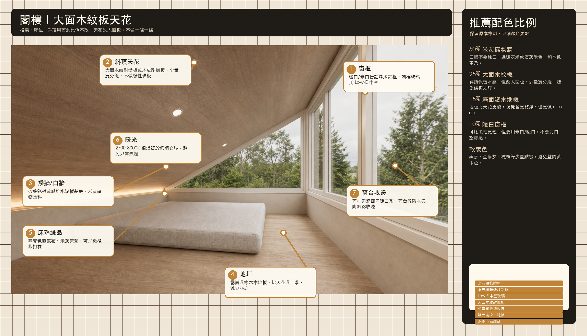

廁所/衛浴間不只是材料變更，格局配置已改成新版方向。施工圖需要同步調整平面、排水、防水、門窗、衛浴設備位置與立面尺寸。
Drawing Update Notes
施工圖需先對齊的變更
以下是目前圖面與原設計不同或需要施工圖同步修正的地方。材料標註圖用來確認方向，正式施工前仍要回到平面、立面、天花與水電圖一起調整。
休息室維持原格局，只調整天花板樣式與打燈方式：吊頂改木門同色大板，間接照明改反折槽洗牆，樓梯每階加藏燈。
閣樓主要改天花板做法、整體木色與牆面配色，窗框顏色也改為新版方向。舊版閣樓圖只放在封存區，不作主動展示。
Drawing & 3D Review
施工圖檔案與 3D 渲染預覽
這區把原始施工圖、拆頁預覽、水電補充說明、鋁門窗整理表與 3D 渲染入口集中在一起。施工圖與 3D 用來對照格局和原始設計，材料、分工與變更仍以本頁最新版清單為準。
Current Decisions
目前材料定版
這裡列的是我們已經討論到比較明確的項目。廁所和露台已進入可採購語言；外牆主體確認使用燒杉板拉絲款，後續只需確認品牌、板寬、塗裝與收邊系統。
主結構
主屋鋼構骨架
- 鋼構防鏽底漆＋面漆
- 全屋主鋼構梁台灣先做
- 外露或包覆處用深木色收斂
- 樓梯系統另採純木作
露台
耐候木感三件組
- 天花：木紋鋁板
- 立面：木紋色一致的戶外立面材
- 地坪：木紋戶外止滑磁磚，台灣先貼
室內白牆
礦物塗料統一版
- 公共區、休息室、閣樓一致
- 矽酸鈣板/纖維水泥板基底
- 批土底漆＋米灰礦物塗料
- 室內地坪選 SPC，規格待確認
外觀
深灰黑木質語彙
- 屋頂鋁合金長城板＋雨排泄水
- 外牆：燒杉板拉絲款
- 龜裂款不作主外牆
- 玻璃依區域分級，不統一套 Low-E
暖橡木/梣木木作、櫃體、欄杆
深胡桃木梁柱、重點收邊
礦物米灰室內乾區牆
灰白石紋廁所地坪、浴室牆面
霧黑金屬窗框、五金、收邊
戶外木感WPC、木紋鋁板
雲杉原木色大廳天花、同露台內牆
Bathroom System
廁所：耐清潔瓷質磁磚版
因為未來可能會使用強效清潔劑，廁所牆面不採礦物奈米塗層、不採竹木纖維板。以瓷質磁磚作為可見表面，縫隙用環氧填縫，衛浴櫃與淋浴馬桶區分兩張圖說明。
{kind=link}
{kind=link}
定版方向：整間浴室牆面與地坪用同系列灰白石紋霧面瓷質磚；地坪已選與叢林屋地板相同款式，止滑 R10-R11；牆面基底為五分木板＋0.5cm 防水水泥纖維板＋防水層。馬桶、淋浴設備、衛浴櫃可由大陸採購，但台灣水電/現場端負責安裝、五金、矽利康與收口。
Lounge Ceiling & Lighting
休息室：天花與樓梯燈光概念
這張圖只作為燈光與材質方向的概念說明，不作格局、窗位、家具或尺寸定案。圖中只看三個標註重點：吊頂材質、吊頂間接照明、樓梯間接照明。
{kind=link}
施工提醒：反折槽需預留燈條鋁槽、擴散罩、變壓器檢修位置與冷氣檢修口；間接光不要做成整片木天花泛白，而是讓白牆承接光，晚上只保留一圈柔和輪廓。樓梯線燈每階要藏在踏鼻下方，燈珠不可外露。
Terrace Materials
露台材料定版
露台要看起來有木質 resort 感，但要扛森林濕氣、雨水、落葉與清潔。地坪改用木紋戶外止滑磁磚，確切色號等實品再確認；天花與立面木紋色要一致，避免一深一淺造成拼貼感。
露台天花：木紋鋁板
耐濕、耐候、低維護。木紋色要與立面同色系，施工注意收邊、陰角、滴水線與燈具檢修。
露台立面：木紋戶外立面材
可用戶外級共擠塑木 WPC 或木紋鋁板系統。重點是與天花木紋色一致，並保留通風背襯與伸縮縫。
露台地坪：木紋戶外止滑磁磚
選木紋霧面，止滑建議 R11 以上。確切顏色待實品樣板確認，防水層、排水找坡、戶外填縫材要做足。

露台施工提醒：天花與立面先一起送樣比色，確認同一個木紋色系後再下單；露台地坪磁磚由台灣先做，大陸端不再報地磚與貼磚。排水坡度、防水收頭、門檻防水與戶外填縫，是露台能不能長期好維護的關鍵。
Main Hall Materials
大廳／瑜珈廳：銜接露台的主空間
大廳是從露台進入室內後最重要的第一個畫面，材料語言要跟露台木感接得上，但室內要更乾淨、安定。這區目前定為天花用雲杉裝潢板，顏色與戶外露台內牆原木色一致；地坪用 SPC，端景格柵用塑木。
大廳施工提醒：大廳天花以雲杉裝潢板為準，顏色同戶外露台內牆原木色；圖面上新增的覆蓋標註優先於原圖舊字。SPC 地坪、端景塑木格柵要一起比色，讓露台木紋、室內雲杉天花、SPC 地板和格柵銜接。SPC 規格待確認，正式採購前需確認厚度、耐磨層、防滑、收邊條與門檻銜接。
Exterior Reference
屋體外觀參考
你給的外觀參考是深灰黑木質外牆、深色屋頂鋁合金長城板、暖木露台內凹面。主外牆已確認用燒杉板拉絲款：比龜裂款更安靜、細緻、耐看，適合整棟大面積使用；龜裂款只保留為局部端景候選。






| 位置 | 建議材料 | 原因 | 狀態 |
|---|---|---|---|
| 屋頂 | 屋頂鋁合金長城板＋雨排泄水系統 | 線條乾淨、耐候，符合參考圖的深色屋頂語彙；此項由台灣先做。 | 台灣先做 |
| 外牆主體 | 燒杉板拉絲款，深黑/深灰黑霧面保護塗裝 | 拉絲款比龜裂款更細緻耐看，適合大面積主外牆；龜裂款僅作局部端景候選。 | 已定版，板寬/塗裝待樣品確認 |
| 露台內凹面 | 木紋鋁板天花＋同色系木紋戶外立面材 | 木質感明確，保養量比實木低；天花與立面需一起比色。 | 已定版，色號待樣品確認 |
| 露台滑門 | 霧黑鋁框＋5+5 膠合玻璃 | 鋁門玻璃不做 Low-E，改用 5+5 膠合玻璃，重點放在安全、氣密與防水。 | 台灣先做 |
| 屋頂三面窗 | 霧黑鋁框＋Low-E 膠合玻璃 | 屋頂日照與熱負荷較高，保留 Low-E；膠合提高安全性。 | 台灣先做 |
| 公共空間四面大窗、廁所、休息室 | 霧黑鋁框＋5+5 膠合玻璃，不做 Low-E | 以安全、氣密、防水與預算控制為主；避免廠商誤報 Low-E。 | 台灣先做 |
| 閣樓窗 | 淺色/白色窗框＋Low-E 中空玻璃 | 閣樓受熱與結露風險較高，使用 Low-E 中空提高舒適度；窗框色依新版方向確認。 | 台灣先做 |
| 隱形紗窗 | 隱形紗窗/防蚊紗窗系統 | 此項由台灣鋁門窗一起處理，最後依窗型、開啟方式與尺寸確認。 | 台灣先做 |
Annotated Views
全空間材料標註圖
主畫面只放目前要對外討論的版本。衛浴間以新版廁所段落為準；閣樓主動顯示新版天花、配色與窗框方向，舊版閣樓圖收在下方封存區。


{kind=link}

{kind=link}

封存：舊版閣樓標註圖預設不顯示，僅保留對照紀錄


Procurement Language
完整材料清單
這版是給大陸廠商看的分工清單：先標出台灣已負責或會先完成的工程，剩下才是大陸端需要叫貨、加工或現場安裝的項目。每列仍保留產品連結與實體圖欄位，後續你給產品或樣品照就可以直接補進來。
台灣先做
所有磁磚、廁所內牆貼磚完成、衛浴現場水電/五金安裝、主鋼構梁、屋頂鋁合金長城板、雨排泄水、鋁門窗、玻璃與紗窗。
大陸端叫貨/施工
燒杉板拉絲款外牆、露台木紋天花與立面材、大廳雲杉天花、SPC 地坪、塑木格柵、室內木作、休息室/閣樓天花、牆面塗料、有質感燈具與插座面板、樓梯木作與踏步燈；衛浴只買馬桶、淋浴設備、衛浴櫃等產品。
銜接重點
大陸端報價前需避開台灣已做項目，只核對接口：產品尺寸圖、預留孔、收邊、色樣、防水交界、天花高度與檢修位置。
| 位置 | 表面材料 | 底層構造/採購 | 施工重點 | 產品連結 | 產品實體圖 |
|---|---|---|---|---|---|
| 01 屋體外殼 / 結構 / 外觀 | |||||
| 主屋結構台灣先做大陸端避開重複報價 | 鋼結構骨架，外露或包覆處用深色收斂 | 鋼構、防鏽底漆、面漆、焊接/螺栓、預埋件、結構收邊 | 全屋主鋼構梁由台灣先做。大陸端只需依完成後尺寸銜接木作、外牆副骨架與收邊，不再報主鋼構。 | 待提供 | 待提供實體圖 |
| 屋頂台灣先做銜接收邊 | 屋頂鋁合金長城板，深色系 | 鋁合金長城板、防水層、屋面副料、泛水板、滴水收邊、雨排泄水、固定扣件 | 屋頂鋁合金長城板與雨排泄水由台灣施作。大陸端只需銜接外牆、天花、檢修與收邊，不再報屋頂主材。 | 待提供 | 待提供實體圖 |
| 外牆主體大陸叫貨已定版 | 燒杉板拉絲款，深黑/深灰黑霧面質感 | 燒杉板、戶外級保護塗裝、通風背襯、副骨架、防水透氣膜、304/316 不鏽鋼固定件、外牆收邊條 | 拉絲款作主外牆；龜裂款不作大面積主外牆，只可作入口或端景候選。需確認板寬、厚度、炭化深度、保護塗裝、通風層與陰陽角收邊樣式。 | 待提供 | 待提供實體圖 |
| 02 衛浴間 / 防水 / 設備 | |||||
| 衛浴間格局施工圖需調整台灣/大陸接口 | 新版衛浴配置：淋浴/馬桶/窗/衛浴櫃依新版圖面 | 給排水定位、防水高度、門窗位置、衛浴設備尺寸、立面尺寸、水電管線 | 這不是只有材料更換，格局已與原設計不同。施工圖需重畫平面、立面、給排水、防水、門檻與設備定位。 | 待提供 | 待提供新版施工圖 |
| 廁所牆面台灣貼磚完成已定版 | 同系列灰白石紋霧面瓷質磚，淋浴牆、馬桶牆、洗手台背牆與整間浴室牆面滿貼 | 五分木板基底、0.5cm 防水水泥纖維板、防水層、磁磚膠、環氧填縫 | 廁所內牆由台灣先做到磁磚貼好；現場水電、五金安裝、矽利康與保護也由台灣端整合。大陸端只需提供衛浴設備產品尺寸與安裝圖，不再報牆磚與貼磚施工。 | 待提供 | 待提供實體圖 |
| 廁所地坪台灣貼磚完成已定版 | 已選定款式：與叢林屋地板相同款式，灰白石紋止滑瓷質磁磚 R10-R11 | 防水層、排水找坡、地坪磁磚膠、環氧填縫 | 所有磁磚由台灣先做，地坪需與排水坡、防水、門檻一起完成；大陸端不再重複報磁磚。 | 待提供 | 待提供實體圖 |
| 廁所天花大陸叫貨/施工已定版方向 | 防潮矽酸鈣板＋防霉漆，中央可搭木紋鋁板飾條 | 防潮矽酸鈣板、輕鋼架/木作骨架、防霉漆、檢修口、換氣設備 | 預留換氣設備高度與檢修；不另列浴室加熱設備，冷暖由冷暖氣處理。木紋飾條只作點綴，不讓潮濕區大面積木材外露。 | 待提供 | 待提供實體圖 |
| 衛浴櫃/檯面大陸採購台灣水電/現場安裝待選型 | 懸浮式衛浴櫃，白色人造石/石英石一體盆 | 防潮夾板或鋁蜂巢櫃體、石材檯面/一體盆、緩衝五金、給排水配件 | 產品可由大陸採購，但給排水、插座、五金固定、矽利康與現場收口由台灣水電/現場端完成。大陸端需先提供尺寸、安裝孔位與給排水圖。 | 待提供 | 待提供實體圖 |
| 馬桶/淋浴設備大陸採購台灣水電安裝待選型 | 馬桶、淋浴花灑/龍頭、排水配件與相關衛浴設備 | 產品本體、安裝配件、給排水尺寸圖、牆面出水高度、預埋/明裝五金規格 | 設備可由大陸採購；台灣端負責給排水、水電銜接、五金安裝與矽利康收口。採購前需先核對孔距、排水方式、牆出水位置與維修空間。 | 待提供 | 待提供實體圖 |
| 淋浴玻璃/隔屏來源/尺寸待確認 | 透明強化玻璃推拉門或固定玻璃，霧黑/拉絲鎳五金方向 | 強化玻璃、滑軌/鉸鏈、止水條、把手、防水收邊 | 只圍淋浴區；馬桶區不做門、不做隔板。需依新版格局確認玻璃寬高、開門方式，以及是否由台灣現場或大陸端供貨。 | 待提供 | 待提供實體圖 |
| 03 露台 / 戶外耐候系統 | |||||
| 露台天花大陸叫貨/施工已定版 | 木紋鋁板，與露台立面木紋色一致 | 鋁/鍍鋅副骨架、不鏽鋼扣件、收邊條 | 注意滴水、通風、燈具檢修口；先與立面材料一起比色。 | 待提供 | 待提供實體圖 |
| 露台立面大陸叫貨/施工待樣品 | 木紋戶外立面材，可用共擠塑木 WPC 或木紋鋁板系統 | 通風背襯、副骨架、304/316 不鏽鋼扣件、伸縮縫 | 木紋色需與天花一致；選霧面低反光、戶外級抗 UV 材料。 | 待提供 | 待提供實體圖 |
| 露台地坪台灣貼磚完成已定版 | 木紋戶外止滑磁磚 R11 以上，確切顏色待確認 | 防水層、排水找坡、戶外填縫材 | 所有磁磚由台灣先做；大陸端不再報露台地磚與貼磚，只需銜接天花、立面、門檻與收邊。 | 待提供 | 待提供實體圖 |
| 露台防水/排水台灣先做銜接確認 | 不可見工程：防水層、排水坡、門檻與滴水線 | 彈性防水材、排水溝/落水頭、門檻防水收頭、戶外矽利康/填縫材 | 防水收頭、排水坡度與地坪磁磚由台灣先做。大陸端施工露台天花/立面時，不可破壞既有防水與門檻收邊。 | 待提供 | 待提供實體圖 |
| 04 室內乾區 / 地坪 / 天花 / 木作 | |||||
| 室內地坪大陸叫貨SPC 規格待確認 | SPC 木紋地材，規格、厚度、耐磨層與色號待確認 | SPC 地板、靜音/防潮墊、收邊條、踢腳板、門檻銜接條、地坪整平材料 | 室內地坪方向已選 SPC；公共區、休息室、閣樓需統一木色邏輯，正式採購前確認耐磨、防潮、防滑、腳感、厚度與木門/天花板色差。 | 待提供 | 待提供實體圖 |
| 大廳/瑜珈廳天花大陸叫貨/施工已定版方向 | 雲杉裝潢板，顏色同戶外露台內牆原木色 | 天花骨架、雲杉裝潢板、收邊條、燈具/吊扇/窗簾軌道開孔與檢修配置 | 大廳是接著露台的主空間，天花需作為重點說明；板色與戶外露台內牆原木色一致，並與 SPC、塑木格柵一起比色。 | 待提供 | 待提供實體圖 |
| 大廳端景格柵大陸叫貨/施工塑木已選 | 塑木格柵，霧面木色 | 塑木格柵條、背襯骨架、固定扣件、收邊條、端部封口 | 端景格柵改選塑木；需確認條寬、間距、深度、顏色與收邊方式，色系要銜接雲杉天花與露台木紋。 | 待提供 | 待提供實體圖 |
| 木門/櫃體木作大陸叫貨/施工待樣品 | 暖橡木、梣木或淺胡桃木皮/木紋板，霧面耐磨透明漆 | E0/F1 夾板、木皮或木紋飾面板、封邊條、緩衝五金、門鎖五金 | 作為室內木色基準；休息室天花需與木門同色或同系列，避免天花、門片、地坪各自偏色。 | 待提供 | 待提供實體圖 |
| 休息室天花大陸叫貨/施工需設計/施工確認 | 與木門同色的大板木作/木紋板，少量寬分縫 | 木作骨架、矽酸鈣板或夾板基底、木皮/木紋板、收邊條、檢修口 | 方向是不做格柵、板面要大、分縫要少，但需先跟設計方與施工方確認天花高度是否足夠，尤其冷氣、燈槽、變壓器與檢修空間。若高度不足，改薄型做法或局部天花。 | 待提供 | 待提供實體圖 |
| 閣樓斜頂天花大陸叫貨/施工已定版方向 | 大面木紋耐燃板或木皮耐燃板，少量寬分縫 | 木作骨架、耐燃基板、木皮/木紋飾面、收邊條、崁燈開孔與檢修配置 | 不做一條一條線性板；板面要大、接縫少，木色選煙燻淺橡木或淺胡桃，降低橘感。 | 待提供 | 待提供實體圖 |
| 05 燈光 / 電氣 / 控制 | |||||
| 休息室天花間接照明大陸叫貨/施工已定版方向 | 反折槽藏 LED，光朝白牆/礦物灰牆面洗 | 2700K-3000K LED 燈條、鋁槽、擴散罩、調光電源、維修暗門 | 光不是往內打木天花板，而是洗向牆面；建議獨立迴路並可調光，日常使用約 30%-50% 亮度。 | 待提供 | 待提供實體圖 |
| 休息室崁燈大陸叫貨已定版方向 | 6 顆深杯防眩崁燈，3000K、CRI 90+ 建議 | 崁燈本體、驅動器、天花開孔、散熱空間、線路分迴路 | 6 顆才足夠作基礎照明；建議 3+3 分迴路，避免全開太亮，也方便夜間只開半區。 | 待提供 | 待提供實體圖 |
| 公共區/閣樓照明大陸叫貨數量待確認 | 暖白光 2700K-3000K，CRI 90+，防眩崁燈或線性洗牆燈 | 燈具本體、驅動器、調光器、迴路配線、天花開孔、檢修點；設計圖暫示 8 顆，實際數量未定 | 先統一色溫與防眩等級；設計圖目前看到約 8 顆，但需由設計方/照明方確認是否真的需要這麼多，再補正式燈具配置圖。 | 待提供 | 待提供實體圖 |
| 大廳吊燈/吊扇大陸採購待選型接口確認 | 造型吊燈、吊扇或吊扇燈，暖色系，依設計圖確認 | 燈具本體、吊桿/吊架、驅動器、吊扇控制器、補強吊點、迴路配線 | 大廳圖面有吊燈/吊扇語彙，但目前未列採購項。需確認是否保留、數量、高度、重量、補強吊點與是否影響雲杉天花開孔。 | 待提供 | 待提供實體圖 |
| 冷暖氣設備台灣採購預留接口 | 冷暖氣室內外機，型號由台灣端確認 | 冷媒管、排水管、電源、室外機架、檢修口、天花或牆面開孔收邊 | 冷氣為冷暖氣，由台灣採購；大陸端不報冷氣主機，只需依台灣冷氣位置預留天花、木作、排水與檢修接口。 | 台灣採購 | 待台灣型號資料 |
| 換氣設備待廠商推薦預留接口 | 浴室/必要區域換氣設備，型號待廠商推薦後決定 | 換氣扇本體、排風管、止逆閥、電源、檢修口、出風口收邊 | 目前只列換氣設備；先看廠商推薦哪一台，再決定採購來源與型號。需先保留排風管路、電源與檢修位置。 | 待提供 | 待提供實體圖 |
| 開關/插座面板大陸採購待選型 | 有質感的開關面板、插座面板，色系依牆面/木作搭配 | 開關面板、插座面板、底盒、弱電面板、USB/網路/特殊插座候選 | 開關插座面板改列為大陸採購項；需確認台灣電工規格、底盒尺寸、迴路需求、插座數量與面板顏色，避免買到不相容規格。 | 待提供 | 待提供實體圖 |
| 06 室內牆面 / 基底 | |||||
| 公共區/休息室/閣樓白牆大陸叫貨/施工已定版方向 | 米灰礦物塗料/礦物奈米塗層，低光澤霧面 | 輕隔間骨架、矽酸鈣板或纖維水泥板、接縫帶、批土、底漆、礦物塗料、保護面漆 | 三區白牆做同一套系統；不要改 HPL、抗倍特或竹木纖維裝潢板。浴室仍以瓷質磁磚為準。 | 待提供 | 待提供實體圖 |
| 內牆基底大陸叫貨/施工已定版方向 | 矽酸鈣板/纖維水泥板基底，表面做礦物塗料 | 輕隔間骨架、矽酸鈣板、接縫帶、批土、底漆 | 乾區白牆基底一致；靠窗或較潮區可改纖維水泥板。潮濕浴室區另依防水構造處理。 | 待提供 | 待提供實體圖 |
| 07 門窗 / 玻璃 / 紗窗 | |||||
| 露台滑門玻璃台灣先做已定版 | 5+5 膠合玻璃，不做 Low-E | 霧黑粉體烤漆鋁框、5+5 膠合玻璃、氣密膠條、門檻防水收邊 | 鋁門窗與玻璃由台灣先做；大陸端不需報鋁門窗，只需避開既有門檻、防水與收邊。 | 待提供 | 待提供實體圖 |
| 屋頂三面窗玻璃台灣先做已定版 | Low-E 膠合玻璃 | 霧黑鋁框、Low-E 膠合玻璃、防水收邊、排水溝槽 | 鋁門窗由台灣先做；屋頂窗日照強，保留 Low-E，並需與屋頂防水泛水收邊整合。 | 待提供 | 待提供實體圖 |
| 公共空間四面大窗/廁所/休息室玻璃台灣先做已定版 | 5+5 膠合玻璃，不做 Low-E | 霧黑鋁框、5+5 膠合玻璃、氣密膠條、收邊矽利康 | 鋁門窗與玻璃由台灣先做；大陸端不需再報窗框/玻璃，後續只銜接窗邊收邊、窗簾盒或木作。 | 待提供 | 待提供實體圖 |
| 閣樓窗玻璃/窗框台灣先做已定版方向 | Low-E 中空玻璃，窗框顏色改走白色或淺色系概念 | Low-E 中空玻璃、氣密膠條、防結露收邊、窗框粉體烤漆色樣 | 鋁門窗由台灣先做；閣樓保留 Low-E 中空，窗框色需配新版閣樓白窗框概念圖。大陸端只銜接室內木作收邊。 | 待提供 | 待提供實體圖 |
| 隱形紗窗台灣門窗一起做型式待確認 | 隱形紗窗/防蚊紗窗系統，型式依台灣門窗廠確認 | 依各窗型確認磁吸、摺疊或捲簾形式，框色配窗框，需與把手與開窗方向整合 | 此項改由台灣鋁門窗一起處理；大陸端不需採購。最後依可開窗方向、窗框深度、把手位置與現場尺寸下單。 | 台灣廠商確認 | 待台灣廠商型錄/樣品圖 |
| 窗簾/軟簾/軌道待選型窗邊接口 | 透光紗簾、遮光簾或軟簾系統，顏色依室內米灰/雲杉木色調整 | 窗簾布、軌道、滑輪、固定件、窗簾盒或明裝收邊、拉繩/電動配件候選 | 大面窗與大廳圖面有軟簾需求，但採購來源未定。需和鋁門窗、天花、牆面收邊一起確認軌道位置、開合方向、遮光需求與是否預留電源。 | 待提供 | 待提供實體圖 |
| 08 樓梯 / 木作 / 踏步燈 | |||||
| 樓梯大陸叫貨/施工已定版方向 | 純木作踏板/扶手，霧面耐磨透明漆 | 結構集成材或實木踏板、夾板木作、緩衝五金 | 不是鋼構外包；踏鼻需做防滑細槽。 | 待提供 | 待提供實體圖 |
| 樓梯踏步燈大陸叫貨/施工已定版方向 | 每階踏鼻下緣藏線燈，暖色低亮度 | 2700K LED 燈條、鋁槽擴散罩、低壓變壓器、迴路配線、檢修點 | 光洗下一階踢面或踏面前緣，作夜間導引；燈珠不可外露，收邊需與純木作樓梯整合。 | 待提供 | 待提供實體圖 |
目前仍需補齊：大陸端只需回填其負責項目的品牌型號、實體樣品照、正式產品連結、燈具規格表、開關插座面板、木作/天花/外牆收邊大樣。台灣先做的磁磚、主鋼構、屋頂長城板、雨排泄水、鋁門窗、玻璃、紗窗與冷暖氣，需提供完工尺寸與接口條件給大陸端銜接，不列入大陸採購報價。另需特別確認：SPC 地坪規格、雲杉裝潢板板型與色樣、塑木格柵條寬與間距、休息室天花高度是否足夠、公共區/閣樓燈具是否真的需要 8 顆、大廳吊燈/吊扇是否保留、換氣設備廠商推薦型號、窗簾/軟簾軌道位置、淋浴玻璃/隔屏供貨來源、衛浴設備尺寸與給排水孔位。